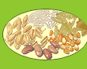
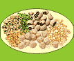
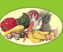

|  |
The black soils are also called regur (from the Telugu word Reguda) and black cotton soils because cotton is the most important crop grown on these soils. Several theories have been put forward regarding the origin of this group of soils but most pedologists believe that these soils have been formed due to the solidifaction of lava spread over large areas during volcanic activity in the Deccan Plateau, thousands of years ago.
Tomato is a rapidly growing crop with a growing period of 90 to 150 days. It is a daylength neutral plant. Optimum mean daily temperature for growth is 18 to 25ºC with night temperatures between 10 and 20ºC. Larger differences between day and night temperatures, however, adversely affect yield. The crop is very sensitive to frost. Temperatures above 25ºC, when accompanied by high humidity and strong wind, result in reduced yield. Night temperatures above 2OºC accompanied by high humidity and low sunshine lead to excessive vegetative growth and poor fruit production. High humidity leads to a greater incidence of pests and diseases and fruit rotting. Dry climates are therefore preferred for tomato production./p>
In general, it requires high temperature through out the year between 20–30°C. In some cases (younger trees), rubber trees can withstand a low temperature of around 15°C for a short period of time. An average rainfall of above 200cm is necessary for the latex tree cultivation. Rainfall of about 300cm might cause some kind of leaf diseases. Rainfall should be distributed uniformly throughout the year. High humidity of 60–80% is beneficial for the rubber tree cultivation.
Jowar is grown both as kharif as well as a rabi crop. As a kharif crop, it grows well in areas having mean monthly temperature of 26°C to 33°C.
The Normal Area during Kharif 2014 is 5.85 Lakh Ha. and the major crops grown were Paddy, Jowar, Maize, Redgram, Groundnut, Castor, Cotton, onion and Chillies. The normal area during Rabi 2014-15 is 4.12 Lakh Ha. and the crops grown were Paddy, Groundnut, Sunflower, Bengalgram, Jowar,Coriander,Onion
Potato is grown in more than 100 countries, under temperate, subtropical and tropical conditions. It is essentially a "cool weather crop", with temperature being the main limiting factor on production: tuber growth is sharply inhibited in temperatures below 10°C (50°F) and above 30°C (86°F), while optimum yields are obtained where mean daily temperatures are in the 18 to 20°C (64 to 68°F) range.
Summer grain crops, including buckwheat, corn, pearl millet, hulless oats and sunflowers can be grown in most regions and yield nutritious whole grains for your kitchen and your coop. This guide includes descriptions of different summer grains, how to grow them, and simple ways to harvest and store these warm-season, homegrown grains.
Nitrogen is important to the chemical industry. It is used to make fertilisers, nitric acid, nylon, dyes and explosives. To make these products, nitrogen must first be reacted with hydrogen to produce ammonia. This is done by the Haber process.Nitrogen is important to the chemical industry. It is used to make fertilisers, nitric acid, nylon, dyes and explosives. To make these products, nitrogen must first be reacted with hydrogen to produce ammonia. This is done by the Haber process.
The color of red soil ranges from red to brown, chocolate, yellow, gray, or sometimes even black. Red soil contains a high percentage of iron content, which is responsible for its color. This soil is deficient in nitrogen, humus, phosphoric acid, magnesium, and lime but fairly rich in potash, with its pH ranging from neutral to acidic.